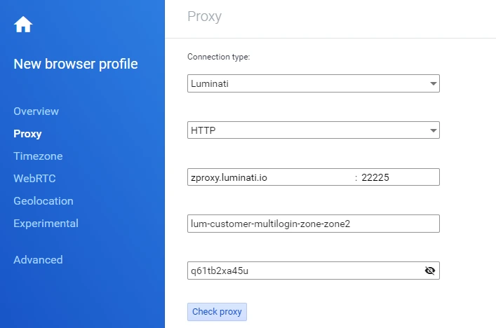

Multilogin Coupon AFF5025, Latest Pricing, Review Insights, and
Real Use Cases
This site is a complete Multilogin content cluster built for
buyers who want one place to understand the platform, compare
current plans, evaluate alternatives, and use the coupon code
AFF5025 before subscribing.
Multilogin sits in the antidetect browser category, but that
short label does not fully explain why so many media buyers,
affiliate marketers, agencies, e-commerce teams, researchers,
and automation-heavy operators use it. At its core, Multilogin
is a multi-account browser platform designed to help users run
many separate browser identities from one control layer. Each
profile can keep its own browser fingerprint, cookies, storage,
session history, proxy settings, and workflow context, which is
why the platform is closely associated with browser
fingerprinting management, stealth browsing, and multiple
account management.
For a buyer, the real questions are more practical: is
Multilogin worth the premium, does it still lead the market,
which plan makes sense, and what kind of discount is available
right now? That is exactly what this website covers. We reviewed
Multilogin's latest public product pages, pricing details, help
center content, and feature positioning, then compared it with
competing antidetect browsers to create a better decision
experience than most thin coupon pages provide.
Multilogin is a browser profile and cloud device management
platform built to reduce account linking. It helps separate
identities using profile-level fingerprint controls, proxy
assignment, automation-friendly access, and team workflow tools.
Who Multilogin Is For
It is commonly used by affiliate marketers, ad account managers,
social media teams, e-commerce operators, data teams, reputation
managers, and businesses that need session isolation without
constant re-verification.
Why This Site Helps
Instead of just listing a code, this cluster explains pricing in
USD, compares Multilogin to alternatives, links to setup guides,
and answers common pre-purchase questions in SEO and
AEO-friendly language.
What Is Multilogin and How Does the Antidetect Browser Work?
Multilogin is best understood as a profile isolation system
layered on top of browser execution. Rather than opening ten
ordinary browser windows and hoping websites do not connect
them, users launch separate browser profiles that behave more
like independent devices. Each profile can have distinct
storage, cookies, local data, time zones, proxy settings, and
browser fingerprint variables.
The latest official positioning also shows that Multilogin has
moved beyond a narrow desktop-browser narrative. Its current
public pricing emphasizes both cloud mobile and browser profiles
in one platform, with extras like API access, team seats in
selected plans, premium proxy traffic bonuses, bulk operations,
and AI quick actions. The reality is broader: it now speaks to
web automation, cloud phone workflows, profile cloning, and
scalable team operations.
From a practical perspective, this means Multilogin aims to
solve three problems at once. First, it helps users avoid
accidental cross-contamination between accounts. Second, it
makes profile management faster through templates, bulk actions,
and repeatable setups. Third, it supports growth from solo
operators to larger teams by offering more profiles, additional
bonuses, and business-tier features such as advanced team
management and custom API rate limits.
Why Multilogin Still Gets Premium Attention in a Crowded
Antidetect Browser Market
Multilogin competes in one of the most comparison-heavy software
categories on the web. Searchers often bounce between phrases like
best antidetect browser,
browser fingerprinting software,
multi-account management tool,
stealth browser for teams, and
Multilogin coupon code. That means a useful homepage has
to do more than rank for one commercial keyword. It needs to
answer why the platform still deserves premium attention even when
cheaper alternatives exist.
The most compelling reason is that Multilogin does not position
itself as a basic "open more profiles for less money" tool. Its
public materials frame the product as a broader operating
environment for cloud mobile and browser profiles, team workflows,
automation, templates, and repeatable account infrastructure.
For SEO and AEO purposes, this page therefore speaks to both buyer
intent and informational intent. If someone asks "What is
Multilogin?", "Is Multilogin worth it?", "What does Multilogin
do?", or "Which Multilogin plan should I choose?", they should be
able to move from this page into the exact supporting page that
answers the next question without leaving the cluster.
Top Multilogin Use Cases for Agencies, Affiliates, E-Commerce
Teams, and Researchers
Affiliate Marketing and Traffic Arbitrage
Affiliate marketers often need clean account separation across
networks, landing page stacks, ad platforms, and testing
environments. Multilogin's profile isolation and proxy
compatibility make it attractive for operators who need to
keep campaigns compartmentalized.
Social Media Management and Agency Ops
Agencies handling many client accounts need repeatable profile
setups, controlled access, and fewer login interruptions. The
combination of browser profiles, automation-friendly API
access, and team features makes Multilogin relevant for
high-volume agency work.
Dropshipping, Marketplaces, and E-Commerce
Store operators, marketplace sellers, and e-commerce teams
often manage multiple locations, storefronts, and workflows.
Multilogin's separate identities and proxy-ready design can
fit these operational needs.
Web Automation and QA Testing
Official Multilogin messaging highlights API access and
developer documentation, which is why automation teams
evaluate it for scripted browser workflows and controlled test
environments.
Online Reputation Management
Businesses and ORM teams that run reviews, listings, local
profile checks, or location-specific workflows look for stable
sessions and clean IP assignment.
Research, Data Collection, and Scraping Support
Teams exploring web data collection use antidetect browsers to
isolate sessions and reduce friction from repeated
verification. Multilogin publicly positions web scraping as
one of its supported solutions.
Latest Multilogin Features Buyers Should Know Before Using Coupon
AFF5025
Cloud Mobile and Browser Profiles in One Platform
Multilogin's pricing page now centers the idea that you can
manage cloud mobile profiles and browser profiles together.
That is useful for operators who need more than a standard
antidetect desktop browser.
AI Quick Actions for Faster Profile Work
Multilogin's help center describes AI quick actions that can
be triggered with natural language prompts. Public examples
include launching profiles, assigning proxies, renaming
assets, and chaining multiple tasks.
Quick Cloning, Bulk Operations, and Templates
Cloning and bulk actions matter because serious users rarely
manage only two or three profiles. Efficient duplication and
templating can save real time when onboarding clients and
rolling out campaigns.
Automation-Friendly API Access
API access appears across trial and paid plan messaging, which
reinforces that Multilogin is not limited to point-and-click
operators. Teams with scripted workflows can evaluate it as
part of a wider automation stack.
Business Tier Team Management
Business plans unlock features such as advanced team
management, unlimited team seats, proxy templates, profile
templates, and custom API rate limits.
Integrated Proxy Bonuses and External Proxy Flexibility
Multilogin's plan pages include monthly premium proxy traffic
bonuses, and current solution pages also promote large
residential proxy pools and broad geo coverage for supported
use cases.

Multilogin proxy image.
Why Buyers Search for a Multilogin Coupon Before Choosing a Plan
Multilogin is often positioned as a premium antidetect solution,
so discount intent is strong. Searchers want lower entry risk,
especially if they are comparing Multilogin against cheaper
tools. Buyers want answers to the bigger question: if this costs
more, what extra value am I buying?
Best route: review the pricing, review, and
alternatives pages before checkout.
Competitor Analysis Summary: How to Make This Multilogin Cluster
Better Than Typical Parasite Pages
During research, the most visible competitor pages fell into a few
patterns. Some were thin affiliate pages that barely explained the
product and relied on generic "get discount" language. Others were
alternative-vendor attack pages that spent most of their word
count criticizing Multilogin to redirect users elsewhere. A third
group used review-style content but often missed current pricing
details, recent feature changes, or intent-matched internal links.
This cluster is designed to outperform those patterns by doing
five things better. First, it covers the whole buyer journey
instead of just one coupon page. Second, it uses current
positioning from Multilogin's own public materials. Third, it
separates price intent, review intent, alternative intent, and
offer intent into dedicated pages. Fourth, it adds FAQ blocks and
clear answer-style headings to support AEO and AI citation
patterns. Fifth, it includes long-form guides in the blog archive
so the site can capture informational intent and internally
support money pages.
If you want a better parasite cluster, this is the formula: use a
strong homepage that defines the entity, a transparent pricing
page, a balanced review page, an alternatives page that
acknowledges rival tools without drifting into spam, a
conversion-focused offers page, and three tutorial posts that
answer beginner and operator questions.
Homepage FAQs About Multilogin Coupon Codes, Features, and Buying
Decisions
What is the current Multilogin coupon code on this website?
The coupon code featured across this site is
AFF5025. Keep it ready when you start your
purchase flow from any offer button on this website.
Is Multilogin an antidetect browser or a full account
management platform?
It is both in practice. Buyers still search for it as an
antidetect browser, but current product positioning shows a
broader platform that includes cloud mobile and browser
profiles, team operations, automation access, and
proxy-supported workflows.
Who should buy Multilogin instead of a cheaper alternative?
Teams that value mature profile isolation, larger-scale
business controls, API access, templates, bulk operations, and
deeper workflow management may justify Multilogin's pricing
more easily than solo users who only need a few profiles.
Where should I start if I am still comparing plans and
competitors?
Start with the
pricing page if cost is the
main factor, the
review page if you want a
balanced verdict, and the
alternatives page if
you are still comparing tools.
Does this site only cover discounts?
No. The coupon is only one part of the cluster. The site also
explains Multilogin features, use cases, current pricing
logic, setup guidance, alternatives, and legal disclosures so
the content feels trustworthy rather than thin.